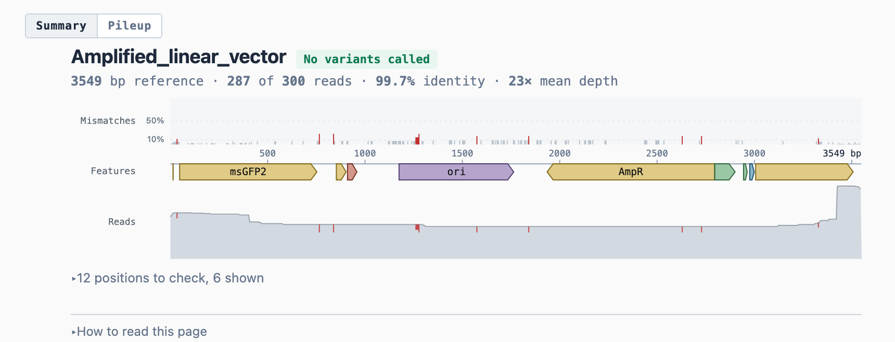

seqviewer
Lightweight tools for working with sequencing files. Each one does a
single job on the formats a run already arrives in, and writes something you
can open or paste. They share an entry point, seqview, and
nothing else.
The core needs nothing beyond the standard library. Aligning reads needs
pysam and biopython, with minimap2 and samtools on
PATH. The fast extra adds numpy, which about halves the time to
scan a large FASTQ, and plot adds matplotlib for figure
output.
$ uv tool install --python 3.13 'seqviewer[cli,fast,plot] @ git+https://github.com/micah-olivas/seqviewer'
One entry point carries the commands.
$ seqview
usage: seqview <command> [options] commands: pileup align reads to a reference and write a pileup page lengths plot the read-length distribution in the terminal seqview <command> --help lists that command's options.
Needs no reference and no aligner, so it runs on a file straight off the sequencer. Lengths are tallied as the file is read, which keeps memory bounded by the range of lengths rather than by the number of reads: a multi-gigabyte FASTQ is scanned in one pass.
$ seqview lengths CRNGS7_1_sample_1.fastq --bins 14
CRNGS7_1_sample_1.fastq · 1 file
bp reads
<128 ▏ 24 shorter, down to 105
128–372 ██████████████████████████████ 4,386
373–617 ██▉ 418
618–862 ▊ 117
863–1,107 ▋ 87
1,108–1,352 ▍ 63
1,353–1,597 ▏ 8
1,598–1,842 ▏ 7
1,843–2,087 ▏ 10
2,088–2,332 ▏ 5
2,333–2,577 ▏ 6
2,578–2,822 ▏ 1
2,823–3,067 ▏ 3
3,068–3,312 ▏ 2
3,313–3,553 █▊ 259
>3,553 ▏ 26 longer, up to 4,700
5,422 reads · 2,211,313 bases
min 105 · median 152 · mean 408 · max 4,700 · N50 1,338
axis 128–3,553 bp, holding 5,372 of 5,422 reads (99.1%). Pass --bulk 100
for the full range.
This run is two populations: 4,386 reads of 128–372 bp, and 259 that span the full 3.5 kb construct. The short ones are 80% of the file and 2% of its bases, which is the gap between the mean, 408, and the N50, 1,338.
The axis covers the central 99% of reads rather than the full range, because a few concatemers otherwise reach the top of it on their own. Reads outside the axis are counted in a row of their own, labelled with the extreme they reach, and every figure under the histogram covers the whole run: the longest read here is 4,700 bp, past the last bin.
seqview lengths [options] reads
reads- a directory of FASTQs, or a single FASTQ
--binsN- bins across the axis (default 24)
--bulkPCT- percent of reads the axis covers, centred (default 99). Concatemers and other ultra-long artifacts otherwise reach the top of the axis on their own. 100 spans the full range
--log- scale bar length by log(1 + count), which keeps the smaller bins of a peaked distribution distinguishable
--widthCOLS- output width (default: the terminal's, or 80)
--per-file- one histogram per FASTQ instead of one for the whole directory
--no-color- write plain text. Colour is already left out when stdout is not a terminal, or when NO_COLOR is set
--no-progress- do not report progress while scanning
--no-live- draw the histogram once the scan finishes rather than filling it in as reads are counted
--pngPATH- also draw the histogram to a figure and open it. PATH may be a file or a directory; given neither, the file is named after the run and put in ~/Downloads. The suffix picks the format, .png by default. Needs the plot extra, which adds matplotlib
--png-binsN- bins across the figure's axis (default 240). Separate from --bins, which sets the terminal's, since a figure has room for more
--no-open- write the figure without opening it
--slow- scan without numpy, which is slower on a large file and reports the same figures
Aligns a run with minimap2 and writes two pages. The pileup carries every read base by base. The summary reduces the same alignment to one screen, and reports whether the clone carries an error where the pileup reports what each read says. Each page links to the other.
$ seqview pileup reads.fastq vector.dna out.html --max 300
CRNGS7_1_sample_1.fastq · 1 file · 5,422 reads Amplified_linear_vector · 3,549 bp linear · 10 features reads 287 drawn of 300 sampled, longest first coverage 3,549 of 3,549 positions (100%) · 23× mean depth variants none at ≥25% of covering reads and ≥2 supporting Wrote docs_demo.html · docs_demo.summary.html · docs_demo.log.txt

A reference of several kilobases is drawn a few bases to the pixel, so each column reports the worst position it spans rather than the mean. One position where every read disagrees would otherwise be averaged into its quiet neighbours.
seqview pileup [options] reads reference out
reads- a directory of FASTQs, pooled into one pileup, or a single FASTQ; .gz is read directly
reference- FASTA, GenBank (.gb/.gbk/.ape), or SnapGene (.dna); the annotated formats need biopython
--skip-typesTYPES- comma-separated feature types to drop, replacing the default (source,primer_bind). Pass 'source' to keep primer sites, which is what shows the Golden Gate junctions on an amplicon; pass '' to keep every feature the file declares
out- HTML page to write; .html is appended if not already there
--per-file- draw one group per FASTQ instead of pooling the directory into a single pileup
--nameNAME- keep only reads whose name contains this
--maxMAX- reads drawn per group, sampled uniformly from across the whole of every file rather than taken from the front (default 500); 0 draws every read, which for a deep run is a page too large to open
--min-read-lenMIN_READ_LEN- drop reads shorter than this before aligning
--insertINSERT- feature label to derive flanks from
--min-overlap-posMIN_OVERLAP_POS- drop reads not crossing this position; 0 = keep everything (default), -1 = reference midpoint
--order{cluster,length,mismatch,position}- row order: length (longest first, the default), position (leftmost first), mismatch (sorts the mismatch pattern as a string), or cluster (hierarchical, average linkage over what each read disagrees about — groups a subpopulation that mismatch splits when a read carries an unrelated early error)
--no-circular- align against one copy even if the reference is circular, discarding origin-crossing segments
--mismatch-freq- accepted and ignored: the mismatch track is now always drawn, having replaced the row of flag triangles. Kept so existing commands still run
--ref-nameREF_NAME- name for the reference, overriding what the file carries (a GenBank/SnapGene file's declared name, or a FASTA header, is often not human-friendly); used as the pooled group name and in the default title
--no-summary- write only the pileup. Both pages are written by default: the summary reads one screen and links to the pileup, and the pileup carries the reads the summary reduces. Named <out>.summary.html
--variant-freqF- share of covering reads a variant needs before the summary calls it (default 0.25). Lower it to see events the default suppresses as sequencing error; no effect under --no-summary
--variant-readsN- reads that must support a variant whatever the share (default 2). At shallow depth a single read is the error rate, not a variant; no effect under --no-summary
--titleTITLE- page heading, replacing the default 'Pileup: <reference name>'
A tool belongs here when it does one job over a file a run already produces, and finishes without a project directory or a config. Candidates:
- per-barcode yield across a demultiplexed plate
- quality profile along the read
- adapter and primer occupancy
Sections still to write: reading the summary page, reading the pileup, calling thresholds and what they miss, reference and feature formats, library use, theming, tests.
seqviewer 0.1.0. Built from the package by docs/build.py on 2026-09-10.